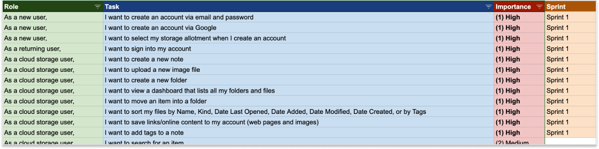

Case Study
BentoBin
A cloud based storage platform that allows its customers to save and share content, across all of their devices. BentoBin aims to be approachable, organized and safe–everything that cloud users need.
ROLES
- UX Research
- Visual Design
- Brand Identity
DELIVERABLES
- User Surveys
- Competitive Analysis
- User Personas
- User Stories
- User Flows
- Wireframes
- Usability Testing
- Branding & Style Guide
- High-Fidelity Prototype
TOOLS
- Figma
- Usability Hub
The Problem
There are many competitors for productivity applications. Each app provides their own take on creating and saving content, while keeping everything accessible across multiple devices. Despite all these variations, organization is still a huge issue. Large amounts of content with different file types can cause busy dashboards with the inability to effectively sort what is important, especially on different devices/viewports. When saving content on different devices, there can be frustration in where the content is saved and located.
The Solution
BentoBin allows you to save anything from anywhere, in one place. Organization is effortless with BentoBin’s intuitive dashboard. BentoBin organizes files in “bins” and categorizes files by type (image, note, link).
1
User Research
The design processes began with user research to get familiar with potential users and better understand what they are looking for in a cloud-storage app. I created a survey and distributed it across social media as well as other forums (slack groups, email). The survey focussed on the following:
- How many survey participants use cloud storage?
- How do they use cloud storage?
- What features do they find important?


CLOUD STORAGE SURVEY SUMMARY
- Used for work, school, and personal use.
- Requires lots of storage for file and picture backups.
- Accessed across multiple devices
- Collaboration and content creation are also very important features.
- Organization can get moderately messy.
2
Personas
After gathering the results from the survey, I conducted several follow-up interviews with survey participants to dig deeper in their experience with cloud storage apps. From analyzing both the survey results and the interview questions, two main personas who represent the users were identified.

Leslie
Admin Assistant
MOTIVATIONS
- Looks for inspiration from the web constantly.
- Shares content a lot with friends.
FRUSTRATIONS
- Saves duplicate content.
- Struggles searching through content

Rob
Student
MOTIVATIONS
- Wants one central place for all his notes.
- Views notes on both desktop and mobile.
FRUSTRATIONS
- Forgets where notes have been saved.
- Can't access his saved desktop files via mobile.
3
Competitive Analysis
The research process continued by identifying three cloud-storage competitors, and putting them through a SWOT analysis evaluating their strengths, weaknesses, opportunities, and threats. Google Drive, Pinterest, and Dropbox are the top cloud-storage apps that the survey participants used.
SWOT SUMMARY
- Dropbox and Google Drive provide great inspiration for BentoBin’s information architecture design. The file structure and sorting labels are minimal and very intuitive, which survey participants prefer.
- Pinterest, on the other hand, provides a nice graphical grid-view in the their dashboard but can be difficult to navigate and sort through the saved items.
4
User Stories
I created a backlog of user stories for all the functionality needed to address the users’ problems. There was difficulty distinguishing which functions were necessary or just a “nice-to-have.” After prioritizing the user stories from highest to lowest, the highest-ranking user stories were put into the first design sprint to make up the first Minimum Viable Product (MVP).
5
User Flows
The following user stories were made into user flows:
- Upload a new file.
- Creating a new folder.
- Move an item into a new folder.

6
Wireframes
Next, I moved on to the skeletal structure of the product. I sketched several iterations of each screen on paper, then used those sketches to make low-fidelity mockups using Figma.


7
Usability Testing
I used the wireframes for my first round of user testing. The test results showed the following:
- Adding “tags” to an item when there actually is no user story for this. This was removed to avoid scope creep.
- To move an item to a new location, the participants had to click through multiple links to accomplish the task.
- One of the participants suggested to use color and/or icons to distinguish the file types
8
Branding
I used mind-mapping to figure out a name for the product. I jotted down 2 words that describe the cloud-service, storage and organization, then wrote several words that related to those attributes. Throughout the research process, I heard buzzwords such as minimal, approachable, intuitive, and dependable. After several iterations, I narrowed the name down to BentoBin.
I was inspired by bento boxes, the modern japanese lunchbox. Bento boxes have separate compartments that hold different parts of your lunch. The name evokes a casual, fun and “kawaii” feeling towards the brand.

9
Mockups
I applied all the branding (colors, typography, imagery) to the wireframes to create BentoBin’s initial high-fidelity mockups. I put my mockups up for testing at UsabilityHub.I created two variations of three different elements and conducted three preference tests on all three. Out of 6 participants, 2 preference tests had unanimous winners while 1 preference test was split 50/50. Participants left great feedback after testing and provided great insight such as “the 1st mockup was cleaner and required less cognitive load.”
SIGN-IN PAGE: OPTION 1
.png)
SIGN-IN PAGE: OPTION 2
.png)
DASHBOARD: OPTION 1
.png)
DASHBOARD: OPTION 2
.png)
Conclusion
WHAT DID I LEARN?
The project started with vague business requirements that had me frustrated in what direction to take. The cloud-storage marketplace is somewhat over saturated with apps that have great designs with a lot of functionality. But despite the over saturation, cloud-storage users still need better solutions to solve cloud-storage problems such as making organization better, or allowing the user to add content faster. I would have never found these problems if it weren't for user research and multiple user testing. Based off of these problems, I focused on improving content organization and minimizing dashboard clutter.
If given more time, I would continue designing important functions such as search and sharing capabilities. I would expand the use of this app from “casual users” to “professional users” who use cloud-storage for corporate needs. This would require more user research and testing by corporate users, as well as upper management.
All-in-all, I learned that applying the research-driven design process to the problem will achieve an effective solution.